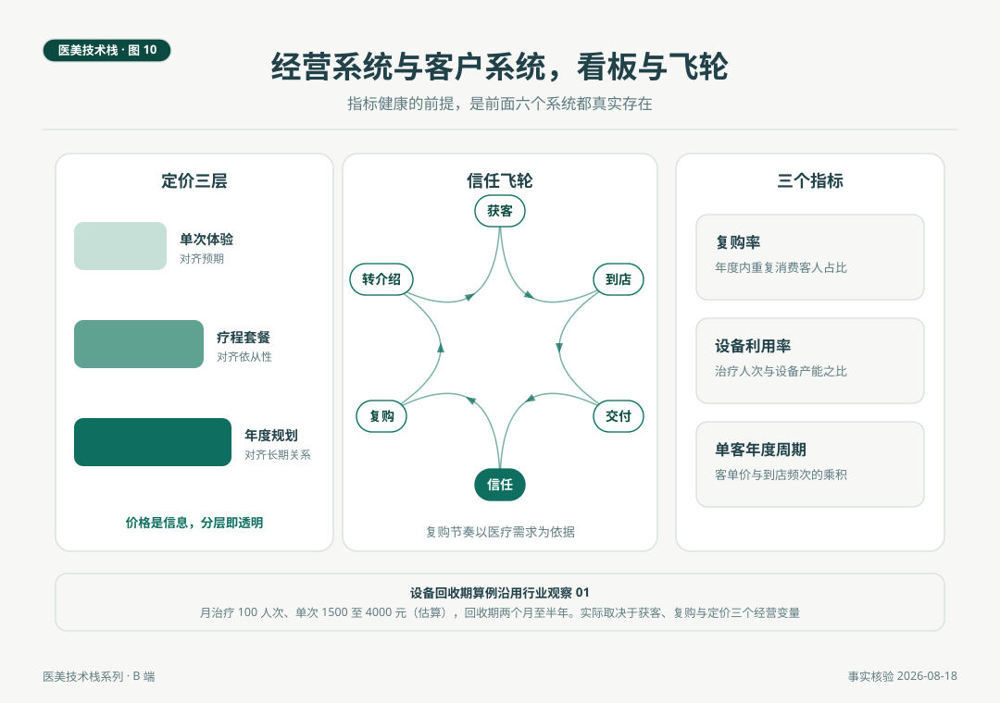

机构的经营与客户系统
定价三层是信息结构，不是价格战术。成本结构的差异藏在设备类型里，折旧型与耗材型的利润逻辑完全不同。客户资产的本质是档案与随访的连续性，复购节奏以医疗需求为依据。看板上真正值得盯的是三个数，复购率、设备利用率、单客年度周期。指标健康的前提，是前面六个系统都真实存在。
场景与问题
2026 年 8 月底，一家开满一年的美容皮肤科诊所开月度经营会。屏幕上是三个数字，复购率、设备利用率、单客年度周期。合伙人问的第一个问题不是营收，是复购率的分母口径里，年度内重复消费的客人占多少，随访到达率跟它是什么关系。负责人答得上来，因为数据从客户系统的档案里直接取。会议的结论写在白板上，获客预算不动，随访体系加一人。这是一个经营成熟的机构做决定的样子，数字来自系统，决定回到系统。
这一篇讲机构栈的最后两个系统，经营与客户，也是系列的收官。
一、定价三层，价格是信息
本刊在「小医美的大问题」第 06 篇讲过一支水光针的价格里装了什么，立场是价格是信息。这个立场落到机构的定价体系上，就是三层结构。单次体验，对齐预期，让客人以最低的认知成本理解项目是什么。疗程套餐，对齐依从性，多数光电与注射项目的证据建立在疗程完成度上，疗程定价是对医疗规律的尊重。年度规划，对齐长期关系，把随访节点、维护节奏与预算摊到一年里。
三层的透明是正面价值。单次、疗程、年度的价格与内容并列呈现，客人按预算与节奏自选，机构的价格信任由此建立。明码标价是监管的基本要求，分层标价是经营的高级形态，两者的方向一致。
二、成本结构，折旧型与耗材型
第 03 篇的品类地图里藏着一条经营的分界线，设备的成本结构分两类。折旧型，以国产二氧化碳点阵与铥激光为代表，无按次计价的正版耗材，成本随时间折旧，单次治疗的边际成本低。耗材型，以热玛吉与皮秒探头为代表，热玛吉正品探头约八千元一次、一次性使用，皮秒蜂巢探头约八万元一个，利润结构深度绑定治疗量，量不足则耗材与折旧双重挤压。
用一个沿用行业观察第 01 篇的算例说明结构差异。若按点阵项目单次市场价一千五百至四千元（估算）、月治疗一百人次计，双激光设备的月产出十五万至四十万元，回收期在两个月至半年之间。同样的算法搬到耗材型设备上，要先把每次治疗的探头成本从客单价里减掉再算。这不是哪类设备更好的问题，是两类生意模型的问题，机构的定价、套餐与获客策略都应该按自己的设备结构分别设计。
三、客户系统，档案与随访的连续性
客户资产这个词容易读虚，它的物质形态很具体，档案与随访。档案，治疗史、影像记录、知情同意书、参数记录的连续沉淀，档案完整的客人，每一次面诊都站在全部历史之上，方案质量与信任同时受益。随访，第 04 篇讲过节点，治疗一周查恢复，一至三个月查效果，长疗程按节点滚动。随访到达率是客户系统最值得盯的过程指标，开篇那家机构把复购率与随访到达率放在一起看，原因就在这里，复购是结果，随访到达是原因。
复购节奏的设计以医疗需求为依据。光电疗程的间隔由组织修复周期决定，注射类项目的维持时间由代谢周期决定，随访节点按这些周期排布，复购自然发生。反过来，脱离医疗节奏用促销节点驱动复购，短期数字好看，长期透支信任，这是本刊信任驱动立场（「小医美的大问题」第 09 篇）在经营侧的推论。

四、获客与品牌，内容是主场
获客品牌系统的合规边界已在第 07 篇讲清（广告指南五条重点），这里讲空间。专业科普内容是这个系统的主场，讲机制、讲评估、讲概率、讲流程，四讲内容既合规又是差异化本身。平台运营（点评、垂直平台）的要点是信息准确与评价真实，口碑与转介绍体系的要点是把满意的客人变成信任的传播节点，而满意本身由交付质量决定，链条最终又回到流程与安全系统。信任飞轮的六个环节，获客、到店、交付、信任、复购、转介绍，每一环的驱动力都写在其他系统里，经营系统只是让它们转得可见。
五、看板上的三个数
复购率，年度内重复消费客人占比，衡量信任与依从性的结果指标。设备利用率，治疗人次与设备产能之比，衡量设备投入的兑现程度，折旧型设备尤其要看这个数。单客年度周期，客单价与到店频次的乘积，衡量长期关系的深度。三个数的共同点是它们都无法被单月冲刺改变，都是系统运转的自然读数。指标健康的前提，是资质、人才、供应链、流程、质量、客户六个系统真实存在，这正是把经营系统放在机构栈最后一位的原因，它是输出端，不是发动机。
六、系列收官，三张栈图合起来是什么
十篇走完，回看总览的三个主体。医生的七层栈回答一个岗位的专业由什么构成，咨询师的七层栈回答一个翻译者岗位的专业边界在哪里，机构的八系统回答一个组织的经营结果从哪里来。三张图用同一个体例，来自 IT 行业的栈图传统，多出来的部分，规范安全层、边界层、质量安全系统，是这个行业专业性的制度表达，也是系列用金色反复标出的位置。
栈图会迭代。共识在更新，注册类别在切换，职业标准在起草，图上的条目会随之修订，但体例不会变，专业是可核对的清单，不是形容词。这是这个系列献给行业读者的话，也是献给消费者读者的话，当你知道专业有结构，你就更容易认出它的样子。
自检清单
| 项 | 核对问题 |
|---|---|
| 定价 | 三层价格与内容是否并列透明呈现 |
| 成本 | 在用设备是否按折旧型与耗材型分开建模 |
| 回收期 | 每台设备是否有显式的回收期测算与假设记录 |
| 档案 | 客户档案的完整率是多少，缺什么 |
| 随访 | 随访到达率是否有专人负责与月度复盘 |
| 复购 | 复购节奏的设计依据是医疗周期还是促销日历 |
| 获客 | 内容是否以四讲（机制、评估、概率、流程）为主场 |
| 看板 | 三个指标的数据来源是否直连客户系统档案 |
结论与失效条件
经营系统与客户系统是机构栈的外循环，定价三层传递信息，成本结构决定模型，档案与随访沉淀资产，信任飞轮把交付质量转化为增长，看板用三个慢指标读出系统的真实状态。
失效条件如下。其一，价格与回收期数字为渠道行情与估算口径（2026 年 8 月），使用前询价复核。其二，指标口径（复购率、利用率、单客周期）各机构应自定义并保持一致，跨机构比较需先对齐口径。其三，经营分析不构成投资建议，个体机构的决策结合自身条件作出。
附 事实与来源清单
价格与成本。 热玛吉探头约 8000 元一次、皮秒蜂巢探头约 8 万元（公开报道）。国产二氧化碳点阵 10 至 20 万、铥激光 40 至 50 万（渠道行情，2026 年 8 月）。点阵单次市场价 1500 至 4000 元、月百人次的回收期算例（估算，沿用行业观察第 01 篇口径）。
立场关联。 价格是信息见「小医美的大问题」第 06 篇，信任驱动与长期关系见第 09 篇，广告合规五条见本系列第 07 篇。
方法说明。 三指标与三层定价为本文提出的经营框架，数字为估算项。本文不构成投资建议。